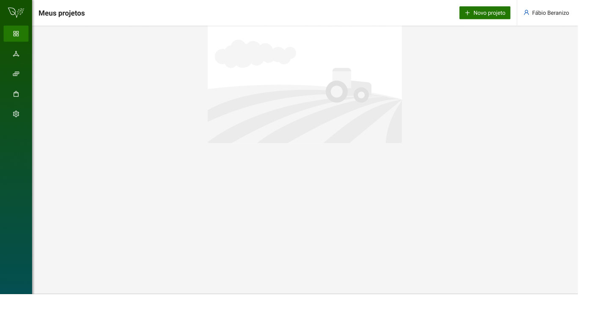
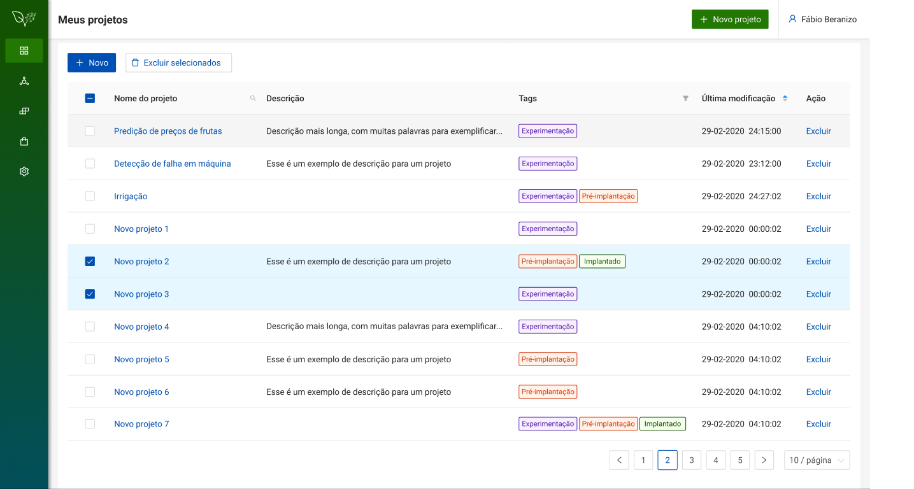

Descrição: Na página "Meus Projetos", será apresentado uma lista com todos os projetos existentes do usuário. As informações dos projetos estarão divididas em cinco colunas: Nome do Projeto, Descrição, Tags, Última modificação e Ação. Caso o usuário não possua nenhum projeto, a página será apresentada em branco.
Para iniciar um novo projeto, o usuário deverá clicar no botão "Novo Projeto".

Alterar nome e descrição do projeto. A descrição é um campo opcional.
Operação "Excluir" na página Projeto.